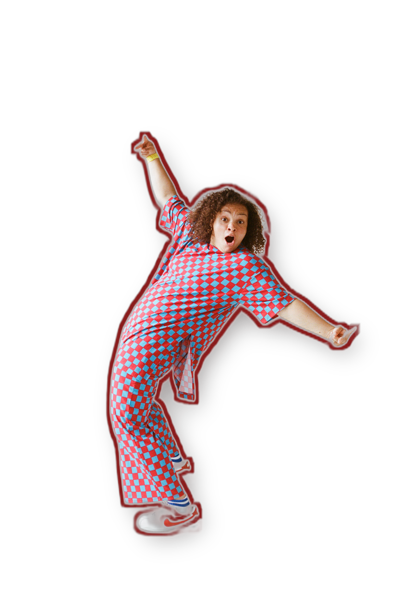

Mira Shane
Mira's passions come to life when she's building relationships, positivity, and storytelling for diverse communities. Facilitating high-energy workshops outside the "norm" reflects her people-centered work.
Growing up biracial and queer in Princeton, New Jersey, Mira carved a niche as the University of Michigan's Most Winningest Goalie, leading the women's lacrosse team to their first NCAA Tournament in 2019 and becoming the program's career saves leader. After coaching at Harvard and Michigan, she brought her talents to New York City.
If they're not on their bike, they champion diversity, equity, and inclusion at Justworks and through Traditional Hot Yoga, creating spaces where all voices are heard. With a background in African American Studies, Law, Justice & Social Change, and Music, Mira celebrates uniqueness in music, sports, and culture.